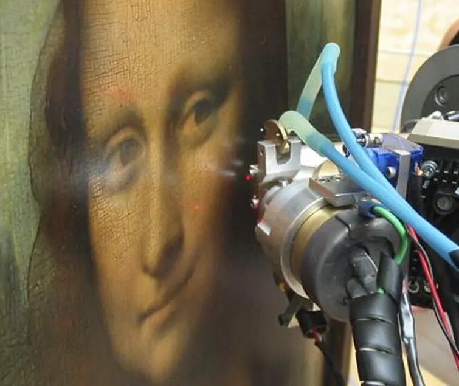
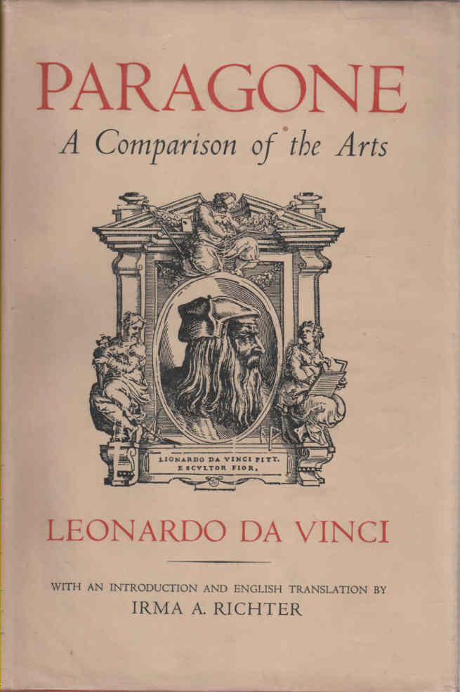

Término derivado del italiano "chiaroscuro" que describe el efecto de fuertes contrasates de
luz y sombra para destacar algunos elementos en una obra de arte. Da Vinci lideró esta técnica
como medio para crear la ilusión de profundidad y volumen en la pintura. A inicios del siglo
XVII, Caravaggio y Rembrandt utilizaron esta misma técnica para acentuar el dramatismo de una
escena.

Esfumado
Este término describe la sutil aplicación de tonos de colores sin que se advierta una transición
claramente perceptible entre ellos. Da Vinci describió esta técnica como una degradación "sin
líneas o bordes, en forma de humo". Recientes análisis mediante rayos X de La Gioconda han
detectado que Leonardo, para conseguir este efecto, utilizó hasta 20 capas de pintura de un
espesor de dos micras cada una.
Perespectva Aérea
También conocoda como "perspectiva atmosférica, define el efecto visual de la humedad y el polvo
en la atmósfera sobre los paisajes, que se hace más notable en los objetos distantes, en los que
los colores parecen hacerse más azules y los tonos más tenues: el color de los objetos, cuanto
más lejos están, tanto más se parece al de la atmósfera que los rodea. En pintura, esto da una
sensación de profundidad y distancia.

Parragone
Palabra italiana que significa "Comparación" y que, en la historia del arte, hace alusión al
debate que surgió en el Renacimiento a propósito de cuál de las artes visuales (pintura o
escultura) era la que podía reproducir con mayor fidelidad las distintas formas de la
naturaleza. En el tratado de la pintura, Da Vinci reivindica la superioridad de la pintura sobre
la escultura, la música y la poesía.